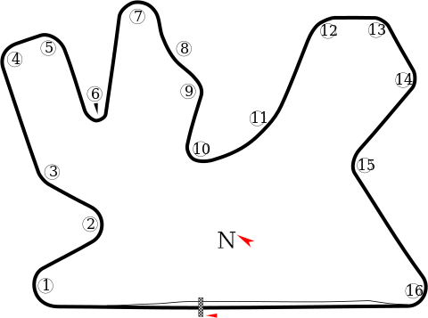

Fórmula 1 (GP de Qatar)

| Detalles de la carrera | |
|---|---|
| Fecha: | Domingo, 8 Octubre, 19:00 |
| Pista: | Circuito Internacional de Losail |
|  | |
| Resultados | ||||
|---|---|---|---|---|
| Pos | Piloto | Tiempo | Pts | |
| 1 |  |
M. Verstappen Red Bull • #1 |
1:27:39.168 | 26 |
| 2 |  |
O. Piastri McLaren • #81 |
+4.883s | 18 |
| 3 |  |
L. Norris McLaren • #4 |
+5.969s | 15 |
| 4 | |
G. Russell Mercedes • #63 |
+34.119s | 12 |
| 5 |  |
C. Leclerc Ferrari • #16 |
+38.976s | 10 |
| 6 |  |
F. Alonso Aston Martin • #4 |
+49.032s | 8 |
| 7 |  |
E. Ocon Alpine • #31 |
+62.390s | 6 |
| 8 |  |
V. Bottas Alfa Romeo • #77 |
+66.563s | 4 |
| 9 |  |
G. Zhou Alfa Romeo • #24 |
+76.127s | 2 |
| 10 |  |
S. Perez Red Bull • #11 |
+80.181s | 1 |
| 11 |  |
L. Stroll Aston Martin • #18 |
+81.652s | 0 |
| 12 | |
P. Gasly Alpine • #10 |
+82.300s | 0 |
| 13 |  |
A. Albon Williams • #23 |
+91.014s | 0 |
| 14 |  |
K. Magnussen Haas • #20 |
+1 vuelta | 0 |
| 15 |  |
Y. Tsunoda AlphaTauri • #22 |
+1 vuelta | 0 |
| 16 |  |
N. Hulkenberg Haas • #27 |
+1 vuelta | 0 |
| 17 | L. Lawson AlphaTauri • #40 |
+1 vuelta | 0 | |
| 18 |  |
L. Sargeant Williams • #2 |
NT | 0 |
| 19 | |
L. Hamilton Mercedes • #44 |
NT | 0 |
| 20 | |
C. Sainz Jr. Ferrari • #55 |
NC | 0 |